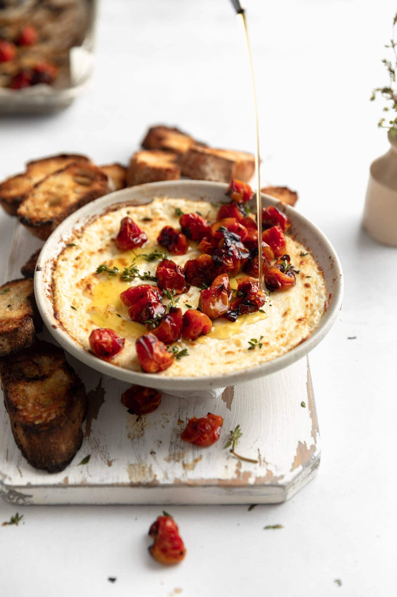

Baked Goat Cheese Dip

Goat cheese is baked with marinara sauce and topped with fresh basil to make this super
easy appetizer in a flash! Serve fresh out of the oven with crostini or garlic bread for dipping.
Ingredients
- 1 (8 ounce) goat cheese log
- 2 cups marinara sauce
- ¼ teaspoon kosher or sea salt (optional)
- ¼ cup fresh basil, cut into ribbons
Steps
- Preheat the oven to 375 degrees F (190 degrees C).
- Press goat cheese to fit the shape of a small baking dish,
leaving a 1-inch border around the edge. Gently spoon marinara sauce around the border,
taking care to cover the edge of goat cheese but not the middle. Sprinkle with salt.
- Bake in the preheated oven until goat cheese is hot and soft and marinara sauce is hot
and bubbling,20 to 25 minutes.
- Remove from the oven and sprinkle with freshly chopped basil.